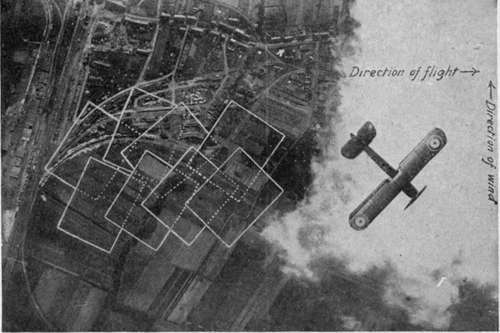

The Plane In The Air
Description
This section is from the book "Airplane Photography", by Herbert E. Ives. Also available from Amazon: Airplane photography.
The Plane In The Air
The first flight of the photographic observer or of the instrument expert who is to work upon airplane instruments is very profitably made as a "joy ride," to familiarize him with conditions in the air. His experience will be somewhat as follows:
The plane is brought out of the hangar, carefully gone over by the mechanics, and the engine "warmed up." The pilot minutely inspects all parts of the "ship," then climbs up into the front cockpit. He wears helmet and goggles, and if the weather is cold or if he expects to fly high, a heavy wool-lined coat or suit, with thick gloves and moccasins, or an electrically heated suit. The passenger, likewise attired, climbs into the rear cockpit and straps himself into the seat. He finds himself sitting rather low down, with the sides of the cockpit nearly on a level with his eyes. To either side of his knees and feet are taut wires leading from the controls to the elevator, stabilizer, tail skid and rudder. If the machine is dual control, the stick is between his knees, the rudder bar before his feet. None of these must he let his body touch, so in the ordinary two-seater his quarters are badly cramped.
At the word "contact" the mechanics swing the propeller, and, sometimes only after several trials, the motor starts, with a roar and a rush of wind in the passenger's face. After a moment's slow running it is speeded up, the intermittent roar becomes a continuous note, the plane shakes and strains, while the mechanics hold down the tail to prevent a premature take-off. When the engine is properly warmed up it is throttled to a low speed, the chocks under the wheels are removed, the mechanics hold one end of the lower wing so that the plane swings around toward the field. It then "taxis" out to a favorable position facing into the wind with a clear stretch of field before it. After a careful look around to see that no other planes are landing, taking off, or in the air near by, the pilot opens out the engine, the roar increases its pitch, the plane moves slowly along the ground, gathers speed and rises smoothly into the air. Near the ground the air is apt to be "bumpy," the plane may drop or rise abruptly, or tilt to either side. The pilot instantly corrects these deviations, and the plane continues to climb until steadier air is reached.
At first the passenger's chief impressions are apt to be the deafening noise of the motor, the heavy vibration, the terrific wind in his face. If he raises his hand above the edge of the cockpit he realizes the magnitude of wind resistance at the speed of the plane, and hence the importance of the stream-line section of all struts and projecting parts.
When he reaches the desired altitude the pilot levels off the plane and ceases to climb. Now his task is to maintain the plane on an even keel by means of the controls, correcting as soon as he notes it, any tendency to "pitch," to "roll" or to "yaw" off the course. The resultant path is one which approximates to level straight flying to a degree conditioned by the steadiness of the air and the skill of the pilot. If he is not skilful or quick in his reactions he may keep the plane on its level course only by alternately climbing and gliding, by flying with first one wing down and then the other, by pointing to the right and then to the left. The skilled photographic pilot will hold a plane level in both directions to within a few degrees, but he will do this easily only if the plane is properly balanced. If the load on the plane is such as to move the center of gravity too far forward with respect to the center of lift the plane will be nose-heavy, if the load is too far back it will be tail-heavy. Either of these conditions can be corrected, at some cost in efficiency, by changing the inclination of the stabilizer. When the plane reaches high altitudes in rare air, where it can go no further, it is said to have reached its ceiling. It here travels level only by pointing its wings upward in the climbing position, so that the fuselage is no longer parallel to the direction of flight. An understanding of these pecularities of the plane in flight is of prime importance in photographic map making, where the camera should be accurately vertical at all times.
The direction and velocity of the wind must be carefully considered by the pilot in making any predetermined course or objective. The progress of the plane due to the pull of the propeller is primarily with reference to the air. If this is in motion the plane's ground speed and direction will be altered accordingly. In flying with or against the wind the ground speed is the sum or difference, respectively, of the plane's air speed (determined by an air speed indicator) and the speed of the wind. If the predetermined course lies more or less across the wind the plane must be pointed into the wind, in which case its travel, with respect to the earth, is not in the line of its fore and aft axis. The effect of "crabbing, " as it is called, on photographic calculations is discussed later (Figs. 136 and 138).

Fig. 136. - Diagram showing method of calculating ground speed from air speed and wind velocity.
Fig. 138. - Unsatisfactory overlaps made when plane is "crabbing".
When the plane has reached the end of its straight course and starts to turn, its level position is for the moment entirely given up in the operation of banking (Fig. 6). Just as the tracks on the curve of a railroad are raised on the outer side to oppose the tendency of the train to slip outward, so the plane must be tilted, by means of the ailerons, toward the inside of the turn. A point to be vertical with respect to the floor of the plane, and not with respect to the earth, for the force acting on it is the combinaclearly kept in mind about a bank is that if correctly made a plumb line inside the fuselage will continue to hang tion of gravity and the acceleration outward due to the turn, pnly some form of gyroscopically controlled pointer, keeping its direction in space, will indicate the inclination of the plane with respect to the true vertical. If the banking is insufficient the plane will side slip outward or skid; if too great, it will side slip inward.
Fig. 6. - Banking.
As part of the " joy ride " the pilot may do a few "stunts," such as a "stall," a "loop," a " tail spin," or an "Immel-man." From the photographic standpoint these are of interest in so far as they bear on the question of holding the camera in place in the plane. The thing to be noted here is that (particularly in the loop), if these maneuvers are properly performed, there is little tendency toward relative motion between plane and apparatus. In a perfect loop it would, for instance, be unnecessary, due to the centrifugal force outward, for the observer to strap himself in. It is, however, unwise to place implicit confidence in the perfection of the pilot's aerial gymnastics. No apparatus should be left entirely free, although, for the reason given, comparatively light fastenings are usually sufficient.
When nearing the landing field the pilot will throttle down the engine and commence to glide. If he is at a considerable altitude he may come down a large part of the distance in a rapid spiral. As the earth is approached the air pressure increases rapidly, and the passenger, if correctly instructed, will open his mouth and swallow frequently to equalize the air pressure on his ear drums. Just before the ground is reached the plane is leveled off, it loses speed, and, if the landing is perfect, touches and runs along the ground without bouncing or bumping. Frequently, however, the impact of the tail is sufficiently hard to cause it to bump badly, with a consequent considerable danger to apparatus of any weight or delicacy. This is especially apt to occur in hastily chosen and poorly leveled fields such as must often be utilized in war or in cross-country flying.
Continue to:
Tags
camera, lens, airplane, aerial, film, exposure, photography, maps, birdseye